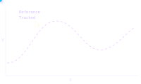

Sam Bouchaud
Robotics Engineer Student
About Me
Sam Bouchaud
I am currently pursuing an engineering degree in Mechatronics alongside a Master's double degree in Artificial Perception and Robotics. I am deeply passionate about building robotic systems. As a straight shooter, I value honest communication and practical execution. From CAD design to final implementation, I tackle projects with discipline and autonomy. And when I'm not wrestling with my CAD models, I am a proud reservist in the 92nd Infantry Regiment.
Education
My Skills
CAD & Mechanical Design
3D modeling with 3DExperience, SolidWorks and Inventor. Applied on industrial projects at VINCI ENERGIES.
Machine / Deep Learning
Machine Learning & Deep Learning — CNNs, LSTMs, GRUs and RL with PyTorch and Scikit-learn. Applied to cable-driven robot control.
Non-Linear Control
Backstepping, GPC and Lyapunov observers. Validated on a 4WS agricultural digital twin.
Simulation & Modeling
High-fidelity 4WS simulator in Scilab with Pacejka tire dynamics and closed-loop control. Digital twin in MATLAB Simscape for a cable-driven robot.
FEM
Structural simulation using ANSYS and Inspire. Meshing, boundary conditions and result interpretation under dynamic and static loading.
Programming
Python, C, SQL and LaTeX. Automation pipeline at VINCI ENERGIES auto-generating supplier documents from ERP data — saving 30 hours and €3,500 per project.
Projects

Vehicle Simulator
01A high-fidelity closed-loop simulation environment for 4-Wheel Steering autonomous vehicles navigating unstructured agricultural terrains — slip, mud, slopes and all.